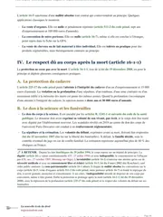

L'arrêt du 11 décembre 1992 sur le changement de sexe expliqué
L'arrêt est rendu le 11 décembre 1992 par l'Assemblée plénière de la Cour de cassation, sa formation la plus solennelle. Il permet pour la première fois à une personne transsexuelle, après un traitement médico-chirurgical, d'obtenir la rectification de la mention de son sexe à l'état civil, au nom du respect dû à la vie privée. L'indisponibilité de l'état des personnes, jusque-là opposée à ce type de demande, ne fait plus obstacle à cette modification.

Que dit l'arrêt du 11 décembre 1992 ?
L'arrêt est rendu le 11 décembre 1992 par l'Assemblée plénière de la Cour de cassation, la formation la plus solennelle de la juridiction. Pour la première fois, la Cour admet qu'une personne transsexuelle obtienne la rectification de la mention de son sexe à l'état civil, après un traitement médical qui lui a donné l'apparence de l'autre sexe.
Avant cet arrêt, la Cour refusait systématiquement ce changement. Elle opposait le principe de l'indisponibilité de l'état des personnes, c'est-à-dire la règle selon laquelle personne ne peut modifier soi-même les éléments qui fixent son identité civile, comme son nom, son sexe ou sa filiation. Une décision de la première chambre civile du 21 mai 1990 avait encore rejeté une demande de ce type, un peu plus de deux ans et demi avant le revirement.
L'Assemblée plénière rend en réalité deux arrêts presque identiques le même jour, sur les pourvois de deux personnes différentes. Les deux obtiennent gain de cause, chacun d'une façon différente. L'arrêt rendu pour René pose la règle de fond, et celui rendu pour Marc tranche en plus une question de preuve.
Le premier arrêt casse sans renvoi, c'est-à-dire que la Cour de cassation tranche elle-même le litige, parce qu'une expertise psychiatrique avait déjà eu lieu. Le second casse avec renvoi devant la cour d'appel de Montpellier, car l'expertise réclamée par le demandeur n'avait jamais été ordonnée. La solution de fond qu'ils posent ensemble reste en vigueur aujourd'hui, mais l'exigence d'une expertise judiciaire a depuis disparu. En effet, la loi du 18 novembre 2016 a retiré toute condition médicale à la procédure.
René X... naît et il est déclaré de sexe masculin à l'état civil. Dès l'enfance, il se perçoit comme une fille.
Il suit un traitement hormonal, puis subit une opération chirurgicale qui retire ses organes génitaux masculins et crée un néo-vagin.
La Cour européenne des droits de l'homme condamne la France dans l'affaire B. contre France, pour avoir refusé à une autre personne transsexuelle la même rectification.
L'Assemblée plénière casse l'arrêt d'Aix-en-Provence et ordonne que Renée X... soit désormais désignée de sexe féminin à l'état civil.

Fiche complète
Droit des personnes L1
Les faits, une opération déjà accomplie, deux dossiers presque identiques
René X... naît le 3 mars 1957 et il est déclaré de sexe masculin sur les registres de l'état civil. Depuis l'enfance, il se considère comme une fille. À vingt ans, il commence un traitement hormonal, puis à trente ans il subit une opération chirurgicale qui retire ses organes génitaux externes et crée un néo-vagin, c'est-à-dire une cavité qui a l'apparence d'un vagin.
D'après les constatations de la cour d'appel, rapportées dans le pourvoi, son caryotype, c'est-à-dire la formule de ses chromosomes, reste masculin. En revanche, ses caractères sexuels secondaires, ceux qui apparaissent à la puberté, sont devenus féminins. Dans la vie sociale, René exerce le métier de coiffeuse, il a un ami, et il se comporte comme une femme et passe pour une femme. Un expert-psychiatre désigné par le tribunal conclut d'ailleurs qu'il présente tous les caractères du transsexualisme.
Une fois l'opération faite, René saisit le tribunal de grande instance. Il demande d'abord que son acte de naissance porte la mention « sexe féminin » à la place de « sexe masculin ». Il demande ensuite que son prénom devienne Renée.
Le second dossier est presque identique. Marc Y... naît le 5 mai 1968 et il est lui aussi déclaré de sexe masculin. Il se considère depuis l'enfance comme une fille, et à vingt et un ans il subit une intervention chirurgicale du même type, suivie d'un traitement hormonal. Pourtant, pour prouver sa situation, il produit seulement l'attestation du chirurgien anglais qui l'a opéré et l'avis d'un médecin qu'il a consulté lui-même, et aucun expert n'a été désigné par un juge. Il saisit ensuite à son tour le tribunal de grande instance, pour faire modifier la mention de son sexe et prendre le prénom de Claudia.
La procédure, deux pourvois et l'assemblée plénière
Dans les deux affaires, le tribunal de grande instance accepte seulement le changement de prénom, et il refuse de modifier la mention du sexe. Le 15 novembre 1990, la cour d'appel d'Aix-en-Provence confirme ces deux refus, par deux arrêts rendus le même jour.
Pour René, la cour d'appel cherche si le sexe masculin inscrit à sa naissance était faux ou l'est devenu. Elle admet qu'il s'agit d'un « transsexuel vrai », qui ne relève ni du délire ni de la perversion. Elle juge pourtant que ces transformations ne font pas d'un homme une femme, et qu'elles en créent seulement « l'illusion plus ou moins réussie ». De plus, le principe de l'indisponibilité de l'état des personnes interdit selon elle de tenir compte de transformations que la personne a elle-même provoquées. La seule conviction intime de René ne suffit donc pas à faire reconnaître qu'il est devenu une femme.
Pour Marc, qui avait limité son appel à la mention du sexe, la cour d'appel décompose le sexe en quatre éléments. Le sexe anatomique tient aux organes génitaux et à des caractères comme les seins, la pilosité ou la voix. Le sexe chromosomique oppose la formule XX de la femme à la formule XY de l'homme, et le sexe hormonal dépend des hormones que le corps produit. Le sexe psychosocial, enfin, est la conviction d'appartenir à un sexe et la volonté de se comporter comme tel. Pour la cour d'appel, Marc reste un homme sur les trois premiers plans, puisque ses transformations sont artificielles, et l'élément psychosocial ne suffit pas à lui seul. Elle refuse aussi l'expertise qu'il demandait, car les documents médicaux produits suffisent selon elle à établir son transsexualisme.
René forme un pourvoi contre l'arrêt qui le concerne, et Marc en fait autant contre le sien. Les deux pourvois sont examinés par l'Assemblée plénière, la formation la plus solennelle de la Cour de cassation, qui réunit le premier président et des représentants de toutes les chambres. Cette formation siège quand une question mérite d'être tranchée au plus haut niveau, souvent parce que la Cour s'apprête à revenir sur sa propre jurisprudence.
C'est bien le cas en 1992. Un peu plus de deux ans et demi plus tôt, le 21 mai 1990, la première chambre civile avait rejeté une demande du même type. Choisir l'Assemblée plénière pour ces deux dossiers signale donc que la Cour s'apprête à changer de position, plutôt qu'à trancher un cas isolé sans portée générale.
Les arguments des parties, la vie privée ou l'indisponibilité de l'état
Le pourvoi de René, rédigé par Maître Choucroy, avocat aux Conseils, contient un moyen unique. Il part des constatations de la cour d'appel elle-même. René est un « transsexuel vrai », il se comporte comme une femme et passe pour telle, et il a la conviction intime d'appartenir au sexe féminin. De plus, sa transformation physique a été réalisée dans un but thérapeutique, c'est-à-dire pour le soigner, et sous contrôle médical. En refusant d'en tenir compte, la cour d'appel porte donc atteinte au respect de sa vie privée et à son droit d'établir des relations avec les autres, notamment affectives, que garantit l'article 8 de la Convention européenne des droits de l'homme. Elle applique aussi à tort l'article 99 du Code civil, qui organise la rectification des actes de l'état civil.
Le pourvoi de Marc contient un moyen unique en cinq branches. D'abord, d'après l'article 146 du nouveau Code de procédure civile, le juge doit ordonner la mesure d'instruction demandée quand le fait à prouver peut changer la solution et que la partie ne peut pas faire seule les recherches nécessaires. Or Marc avait demandé une expertise confiée à trois médecins de spécialités différentes, dont un psychiatre et un généticien, pour expliquer sa féminisation et le rôle du cerveau dans son identité sexuelle.
Ensuite, selon Marc, l'indisponibilité de l'état des personnes laisse cet état évoluer, et il change le plus souvent à l'initiative de la personne elle-même. En outre, la cour d'appel a elle-même défini le sexe par quatre éléments et constaté que le sexe psychosocial de Marc était féminin. D'après sa propre définition, Marc ne pouvait donc plus être tenu pour un homme. Elle a d'ailleurs écarté cet élément psychique au seul motif qu'il est subjectif, sans expliquer par des données médicales pourquoi il ne reposerait sur rien d'objectif.
Enfin, une personne qui a perdu certains caractères de son sexe d'origine, sans acquérir tous ceux de l'autre, ne peut plus être rattachée à aucun des deux. Pour Marc, l'ordre public, qui vise la paix sociale, et le devoir de venir en aide à cette personne imposent donc au juge de lui attribuer le sexe dont elle a l'apparence aux yeux des autres.
Le texte publié des deux arrêts ne rapporte aucune défense. La position contraire se lit donc dans les arrêts d'Aix-en-Provence, que les pourvois reproduisent. Pour la cour d'appel, le sexe se fixe d'abord par des données biologiques, comme les chromosomes, et une personne ne peut pas se prévaloir de transformations qu'elle a choisies pour changer son état civil. Sinon, elle disposerait librement de cet état, ce que le principe d'indisponibilité interdit.
Le principe d'indisponibilité de l'état des personnes empêche-t-il le changement de sexe ?
L'Assemblée plénière doit dire si le respect de la vie privée peut l'emporter sur le principe d'indisponibilité de l'état des personnes, quand un traitement médical a transformé l'apparence physique d'une personne et que son comportement social correspond à cette apparence. Toute la question est donc de savoir si l'indisponibilité, qui interdit de changer d'état par sa seule volonté, empêche aussi le juge de tenir compte d'une transformation déjà accomplie.
Ce même respect de la vie privée fonde aussi d'autres solutions, par exemple l'arrêt du 23 octobre 1990, qui juge que l'article 9 du Code civil protège toute personne, quels que soient son rang, sa naissance ou sa fortune, et il confirme la condamnation d'un journal qui avait révélé l'éducation du fils mineur d'un prince.
Deux logiques s'opposaient jusque-là. D'un côté, la cour d'appel jugeait qu'un individu ne peut pas se prévaloir d'artifices qu'il a lui-même provoqués pour prétendre avoir changé de sexe, ce qui reviendrait, selon elle, à disposer librement de son propre état civil. De l'autre, l'article 8 de la Convention européenne des droits de l'homme protège le droit de toute personne au respect de sa vie privée, y compris dans la façon dont elle vit son identité sexuelle.
La difficulté tient aussi à la preuve, car il faut savoir si un simple certificat médical produit par la personne elle-même suffit, ou si une expertise ordonnée par un juge est nécessaire. Le second arrêt du 11 décembre 1992 tranche justement cette question, en plus du principe posé par le premier.
La solution, le respect de la vie privée l'emporte sur l'indisponibilité de l'état des personnes
L'Assemblée plénière casse et annule l'arrêt d'Aix-en-Provence dans le dossier de René. Elle statue directement, sans renvoyer l'affaire à une autre cour d'appel, ce qui reste rare en cassation. Elle le peut parce que la cour d'appel avait déjà fait constater, par un expert-psychiatre commis par le tribunal, la réalité du syndrome transsexuel de René. Il ne restait donc plus qu'à appliquer la bonne règle de droit à des faits déjà établis.
L'attendu de principe
« lorsque, à la suite d'un traitement médico-chirurgical, subi dans un but thérapeutique, une personne présentant le syndrome du transsexualisme ne possède plus tous les caractères de son sexe d'origine et a pris une apparence physique la rapprochant de l'autre sexe, auquel correspond son comportement social, le principe du respect dû à la vie privée justifie que son Etat civil indique désormais le sexe dont elle a l'apparence ; que le principe de l'indisponibilité de l'état des personnes ne fait pas obstacle à une telle modification. »Cass. Ass. plén., 11 décembre 1992, n° 91-11.900
La Cour ordonne donc que Renée X..., née le 3 mars 1957, soit désormais désignée à l'état civil comme étant de sexe féminin.
Le même jour, l'Assemblée plénière rend un second arrêt, sous des visas proches et avec le même attendu de principe, dans le dossier de Marc devenu Claudia. Cette fois, la Cour casse avec renvoi devant la cour d'appel de Montpellier. Ce renvoi s'explique par la preuve, car la cour d'appel d'Aix-en-Provence avait refusé d'ordonner l'expertise que Marc réclamait, en jugeant que les documents médicaux déjà produits suffisaient. Or, selon la Cour de cassation, seule une expertise judiciaire peut établir la réalité du syndrome transsexuel. Faute de cette expertise, l'affaire doit donc être rejugée sur ce point.
Les deux décisions posent ainsi deux règles distinctes, qui se complètent. La première, sur le fond, permet la rectification du sexe à l'état civil au nom du respect de la vie privée. La seconde, sur la preuve, exige une expertise judiciaire pour établir la réalité du syndrome transsexuel, une exigence que la loi supprimera vingt-quatre ans plus tard.
Le droit des personnes te paraît dense d'un coup ?
Je t'envoie gratuitement mon guide « Réviser le droit sans s'épuiser ». Tu y trouves la méthode que suivent mes élèves pour relier chaque grand arrêt au reste du programme, au lieu de l'apprendre isolément.
Pourquoi la Cour change-t-elle de position en 1992 ?
Le contexte européen explique directement cette décision. Le 25 mars 1992, soit huit mois avant l'arrêt du 11 décembre, la Cour européenne des droits de l'homme condamne déjà la France dans l'affaire B. contre France. En effet, elle juge que le refus de modifier l'état civil d'une autre personne transsexuelle viole l'article 8 de la Convention, qui protège le respect de la vie privée.
L'Assemblée plénière tire les conséquences de cette condamnation. Elle abandonne ainsi la position qu'avait prise la première chambre civile le 21 mai 1990, quand celle-ci avait rejeté une demande semblable. Elle choisit en plus la formation la plus solennelle de la Cour de cassation pour marquer ce changement, plutôt que de laisser une chambre ordinaire trancher un cas isolé.
Selon la Cour, l'indisponibilité de l'état des personnes interdit de modifier son état par un simple contrat ou par une déclaration de volonté. En revanche, le juge peut tenir compte d'une transformation physique réelle, déjà accomplie par un traitement médical. Le sexe indiqué à l'état civil peut donc suivre l'apparence physique de la personne, sans que le juge lui laisse pour autant disposer librement de son état.
La portée, du revirement de 1992 à la démédicalisation de 2016
La solution de 1992 reste en vigueur pendant vingt ans, mais les juges deviennent plus exigeants sur la preuve. Deux arrêts du 7 juin 2012 précisent ce que la personne doit apporter au juge. Elle doit établir, au regard de ce qui est communément admis par la communauté scientifique, la réalité du syndrome transsexuel dont elle est atteinte, ainsi que le caractère irréversible de la transformation de son apparence.
Ce nouvel attendu ne cite plus, à la lettre, le traitement médico-chirurgical à but thérapeutique de 1992, et il ouvre en théorie la preuve à tout moyen. Dans les deux affaires jugées ce jour-là, la Cour rejette pourtant les deux pourvois. En effet, les demandeurs avaient refusé de se soumettre à l'expertise ordonnée par les juges du fond. L'un d'eux n'avait en plus produit qu'un certificat médical jugé trop sommaire sur une opération réalisée à l'étranger. La preuve reste donc, dans les faits, aussi difficile à apporter qu'avant 2012.
La loi du 18 novembre 2016 de modernisation de la justice du XXIe siècle change enfin la méthode. Elle insère dans le Code civil les articles 61-5 à 61-8, qui retirent toute exigence médicale à la procédure. Ainsi, la personne majeure ou mineure émancipée doit seulement démontrer, par une réunion suffisante de faits, que la mention de son sexe à l'état civil ne correspond plus à celui dans lequel elle se présente et dans lequel elle est connue. Le texte donne en outre des exemples de preuve, à savoir se présenter publiquement sous le sexe revendiqué, être connu sous ce sexe par son entourage familial, amical ou professionnel, ou avoir déjà obtenu le changement de son prénom pour qu'il corresponde à ce sexe.
Le texte précise en toutes lettres que le fait de ne pas avoir subi de traitement médical, d'opération chirurgicale ou de stérilisation ne peut motiver un refus de la demande. La procédure repose donc désormais sur la déclaration de la personne, toujours portée devant le tribunal judiciaire, sans expertise ni certificat.
L'application de ce texte pose pourtant encore des difficultés. Une circulaire de politique civile du 8 janvier 2026 rappelle à l'ordre les tribunaux qui continuent d'exiger, dans les faits, un certificat ou un justificatif médical malgré la loi. Elle réaffirme qu'aucune preuve de ce type ne peut être demandée. Deux propositions de loi, déposées en 2024 et en 2025, envisagent même de retirer la procédure au juge, pour la remplacer par un simple formulaire administratif. Le débat porte donc aujourd'hui sur l'accès réel à un droit que la Cour de cassation avait reconnu dès 1992.
Les critiques de l'arrêt
L'arrêt du 11 décembre 1992 est d'abord salué comme une avancée. En effet, il aligne enfin le droit français sur la jurisprudence européenne, huit mois après la condamnation de la France dans l'affaire B. contre France. Il reconnaît pour la première fois que l'identité vécue d'une personne peut l'emporter sur son sexe biologique de naissance.
La doctrine relève pourtant vite une limite, car l'arrêt réserve le changement de sexe aux personnes qui ont subi un traitement médico-chirurgical, ce qui revient à imposer une opération pour accéder à un droit présenté comme relevant de la vie privée. Une personne qui ne veut pas, ou qui ne peut pas subir cette opération, pour des raisons de santé par exemple, reste sans solution.
Le second arrêt du même jour ajoute une difficulté pratique, car l'exigence d'une expertise judiciaire pour prouver la réalité du syndrome transsexuel impose à la personne un examen intrusif, dans un domaine qui touche à sa vie la plus intime. Cette expertise retarde en plus la procédure de plusieurs années dans certains dossiers.
Les arrêts du 7 juin 2012 illustrent cette difficulté. Alors que leur attendu ne cite plus le traitement médico-chirurgical de 1992, les deux demandeurs perdent quand même leur pourvoi, faute d'avoir satisfait à une preuve toujours aussi stricte. Le décalage entre le principe affirmé par la Cour et son application réelle explique les critiques adressées à cette jurisprudence jusqu'à la loi de 2016.
Avec le recul, la loi de 2016 montre ce que la solution de 1992 exigeait encore, c'est-à-dire une transformation par un traitement médico-chirurgical, prouvée ensuite par une expertise judiciaire. Vingt-quatre ans après l'arrêt, le législateur choisit en effet une procédure fondée sur la seule déclaration de la personne, sans le moindre examen médical.
Comment utiliser l'arrêt du 11 décembre 1992 dans une copie
Dans une dissertation. Cet arrêt sert de référence dès que le sujet porte sur l'indisponibilité de l'état des personnes, sur les rapports entre le corps et le droit, ou sur l'influence de la Cour européenne des droits de l'homme sur le droit français. Tu montres alors comment une condamnation européenne, ici B. contre France en mars 1992, peut pousser la Cour de cassation à changer sa jurisprudence en quelques mois. Ma page consacrée à la dissertation juridique détaille d'ailleurs toute la méthode.
Dans un commentaire d'arrêt. Si tu commentes cette décision, tu distingues les deux temps du raisonnement. La Cour pose d'abord que le respect de la vie privée justifie la rectification du sexe à l'état civil. Elle précise ensuite que l'indisponibilité de l'état des personnes ne s'y oppose pas, ce qui répond directement à l'argument retenu par la cour d'appel. La méthode complète se trouve sur ma page consacrée au commentaire d'arrêt et sur celle consacrée à la fiche d'arrêt.
Dans un cas pratique. Dès qu'un énoncé fait intervenir une personne qui demande la rectification de son sexe à l'état civil, tu regardes d'abord la date des faits. Pour une demande formée après le 18 novembre 2016, tu appliques directement les articles 61-5 à 61-8 du Code civil, sans exigence médicale. En revanche, pour une demande antérieure à cette loi, tu cites l'arrêt du 11 décembre 1992 et ses deux conditions, le traitement médico-chirurgical et l'expertise judiciaire.
Ma fiche de droit des personnes L1 relie pas à pas ce raisonnement au reste du programme, notamment la protection du corps humain et le respect de la vie privée.
Les erreurs à éviter avec l'arrêt du 11 décembre 1992
- L'arrêt de 1992 et l'arrêt Sexe neutre de 2017. Cet arrêt de 1992 autorise le passage du masculin au féminin ou l'inverse. L'arrêt Sexe neutre, en 2017, refuse en revanche la création d'une troisième catégorie, ni masculine ni féminine. Ces deux arrêts répondent donc à deux questions distinctes.
- L'application de la loi du 18 novembre 2016. Depuis cette loi, la procédure ne demande plus aucun traitement médical, aucune opération ni aucune expertise. L'attendu de 1992, qui exige un traitement médico-chirurgical, ne s'applique donc plus aux demandes formées après cette date.
- Les deux arrêts du même jour. L'arrêt rendu pour René, n° 91-11.900, casse sans renvoi, car l'expertise avait déjà eu lieu. Celui rendu pour Marc, n° 91-12.373, casse avec renvoi devant la cour d'appel de Montpellier, faute d'expertise. Les deux posent pourtant le même attendu de principe.
- L'expertise judiciaire, aujourd'hui supprimée. L'exigence d'une expertise judiciaire, posée par le second arrêt de 1992 puis maintenue par les arrêts du 7 juin 2012, a disparu avec la loi de 2016.
Questions fréquentes
Que dit l'arrêt du 11 décembre 1992 en une phrase ?
Pourquoi l'arrêt du 11 décembre 1992 est-il si important ?
Quelle est la date et la juridiction de l'arrêt ?
L'arrêt du 11 décembre 1992 est-il toujours d'actualité ?
Comment citer l'arrêt du 11 décembre 1992 en copie ?

Après cet arrêt, révise tout le programme de droit des personnes.
Ma fiche de droit des personnes L1 reprend chaque notion avec les grands arrêts qui la fondent. Les explications restent simples, pour que tu les comprennes à la première lecture et que tu t'en serves en commentaire comme en cas pratique.
Voir la fiche de droit des personnes L1